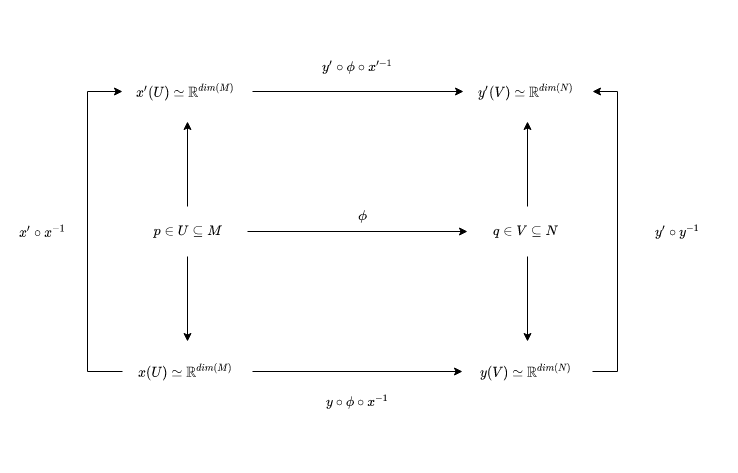

§ GT: Differentiable Structures
To get differentiable manifolds, we need to refine the notion of Compatibility. We do this by saying that an atlas
A is
K-compatible if
∀(U,x),(V,y)∈A we have either of the two following conditions:
- U∩V=Φ
- U∩V=Φ → U,V satisfy some condition K
Now, we can define
K to be usually:
- C0
- Ck → Transition maps are k-times differentiable
- C∞ → Smooth transitions
- Cω→ Analytic i.e can be expanded through a taylor expansion
- Complex → Transition functions satisfy the Cauchy-Riemann Equations
Whitney Theorem → The theorem says:
- Any maximal Ck Atlas, contains a C∞ Atlas
- Any two Ck atlas that cotain the same C∞ atlas are identical
This implies that once we have a
C1 atlas, we can essentially construct a smooth manifold. Thus, in terms of differentiable structure, we don't need to worry about variable values of
k.
The only thing we need to look for is whether the function is differentiable once or not.
§ Smooth Manifold
A
Ck Manifold is a triple
(M,O,A) where
- (M,O) → Tological Space
- A → Ck atlas
We can create this atlas by simply taking a
C0 atlas and removing the pairs that are not differentiable.
§ Differentiable Maps
If we have two manifolds
(M,OM,AM) and
(N,ON,AN) , then we can say that a map
ϕ:M→N
is diffferentiable if for some points in some charts in the two atlases:
p∈U:(U,x)∈AMq∈V:(V,y)∈ANq=ϕ(p)
The transformation map that comes:
y∘ϕ∘x−1
is
Ck in
Rdim(M)→Rdim(N). Thus, the notion of differentiability, as expected, depends on the representation of
U,V in the atlases chosen i.e
x(u∈U),y(v∈V) and this begs the question → What if we had another chart? If this differentiability exists as a notion on all such charts, maybe we can also 'Lift' this concept from the chart to the Manifold level. To do this, let's consider another chart such that
p∈U:(U,x′)∈AMq∈V:(V,y′)∈ANq=ϕ(p)
Given our original maps
(U,x),(V,y), we don't really have the guarantee that the transformation on the new map:
y′∘ϕ∘x′−1
Is a differentiable structure. However, if we see a transformation from
x,y to
x′,y′ we can definitely write it as
x(U)→x′∘x−1→x′(U):Rdim(M)→Rdim(M)y(V)→y′∘y−1→y′(V):Rdim(N)→Rdim(N)
And because this transformation exists, we can say that the second chart is also differentiable since we can always transform it to the first chart and then impose differentiability. This is summarized in the figure below:

This relation would, by extension, be true for any chart for which this relation holds →
Ck-compatible chart. If the map
ϕ:M→N is
C∞-compatible then this is called a
diffeomorphism, and the two manifolds
(M,OM,AM) and
(N,ON,AN) are called diffeomorphic if there exists a diffeomorphism between them.
M≅diffN
Usually, we consider diffeomorphic manifolds the same as smooth manifolds.
§ How many different Differentiable structures can we put on a manifold up to diffeomorphism ?
The answer depends on the dimension:
- dim=1,2,3 → Radon-Moise Theorems → For we can make a unique differential Manifold from topological manifolds since all the different ones are diffeomorphic, which allows us to work easily with differentiability
- dim>4 → Surgery Theory → We can essentially understand a higher dimensional torus by using familiar structures like a sphere and cylinder, which can be 'intelligently' combined: If we take a sphere, make a hole, and insert a cylinder i.e. perform surgery, while controlling invariance, like fundamental group, homotopy group, homologies, etc., then we can essentially understand the torus since we understand the sphere and Cylinder. The assertion is that we can, similarly, understand all structures in higher dimensions by performing intelligent surgery. In the 1960s, it was shown that there are finitely many smooth manifolds one can make from a topological manifold in dimensions greater than 4. One practical application of this to physics, in principle, could be that if we are to assume that spacetime is a differential manifold of higher dimensions, then pure math tells us that there exist finitely many ways in which this higher dimensional structure could be projected to our 3D understanding, and we could conduct experiments to determine which one of these nature has chosen!
- dim=4 → For the case of compact spaces, there are non-countably many different smooth manifolds that can be created! For the case of compact spaces, we look at partial results based on Betti Numbers. Thus, when we look at Einstein's description of spacetime being R4, we can see that there are non-countably many smooth manifolds as far as we know from the analysis. Thus, if our theories fail, they could very well fail because of our choice of the structure.
One of the key features of Differential Manifolds is tangent spaces. Since we are speaking of geometry intrinsically, we need to develop an intuition that is separate from the embedded space in which an object exists.